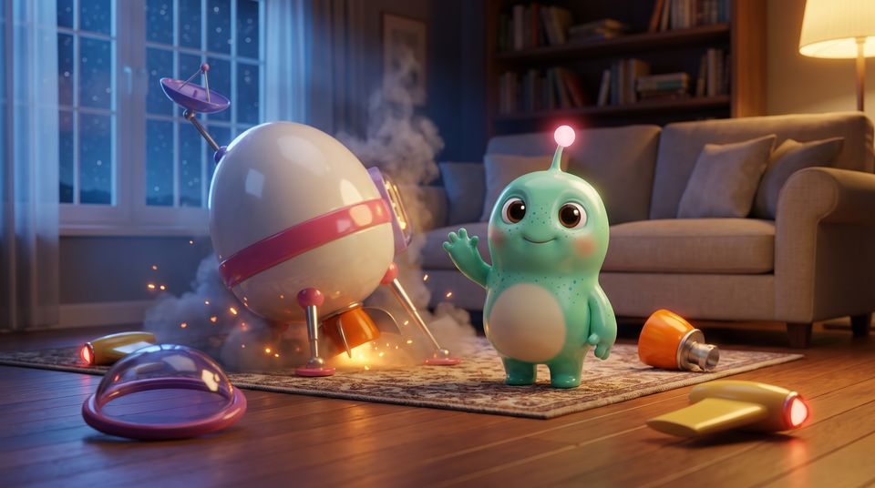
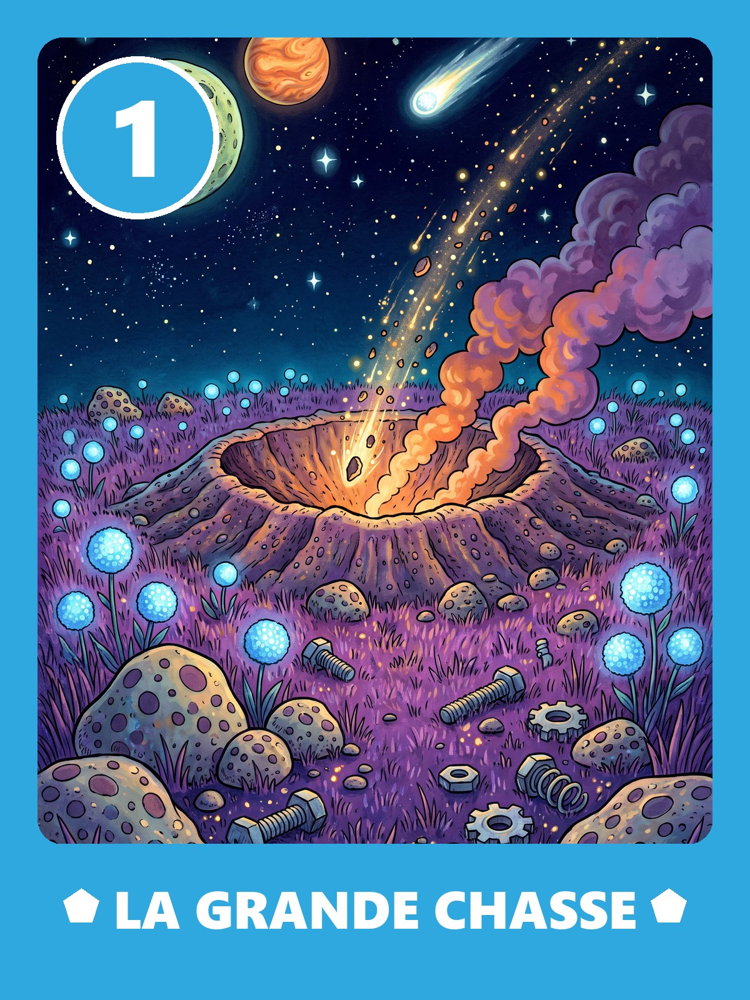
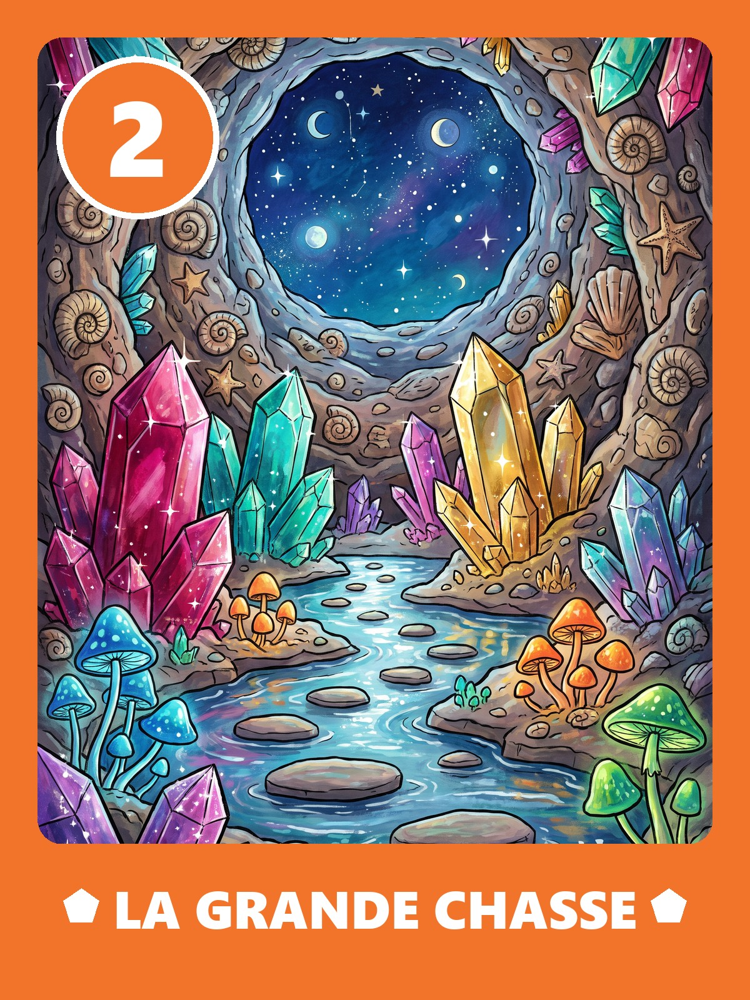
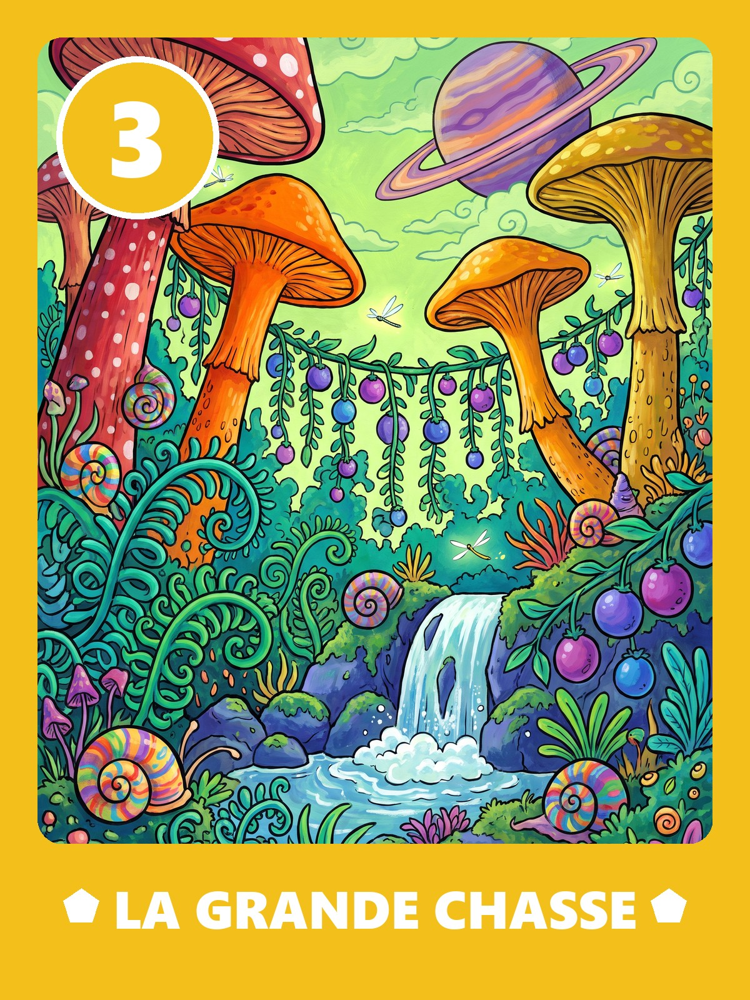
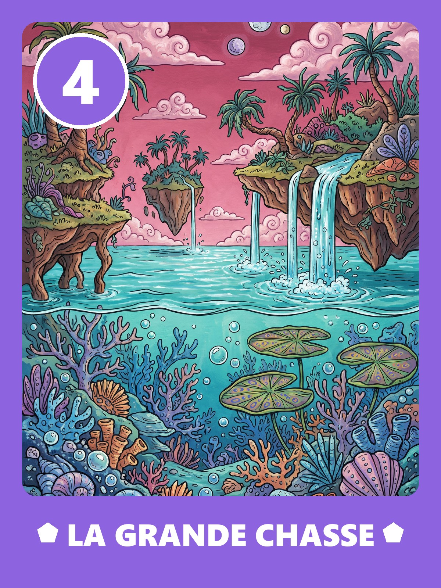
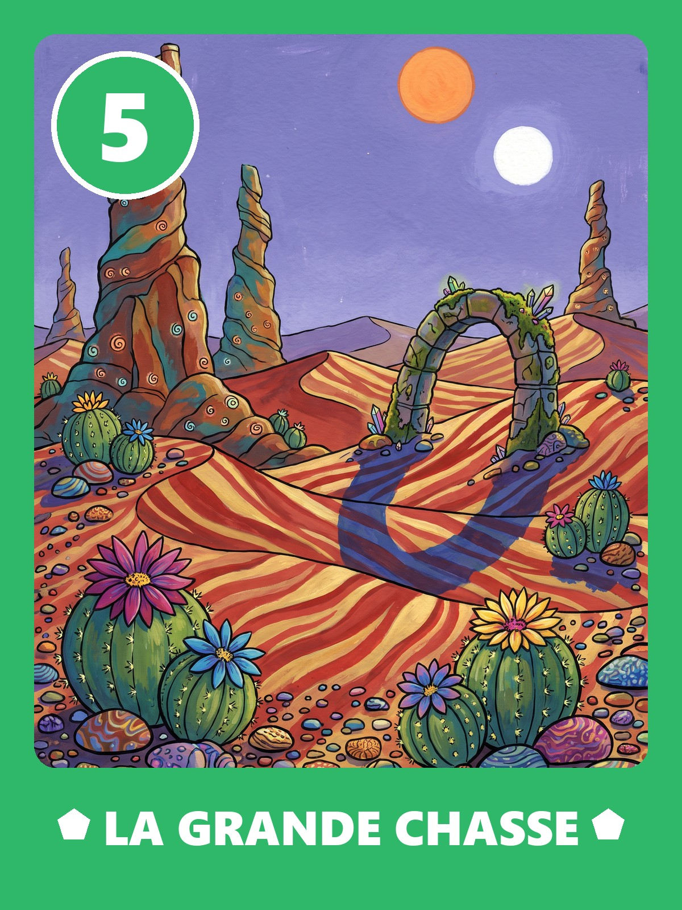
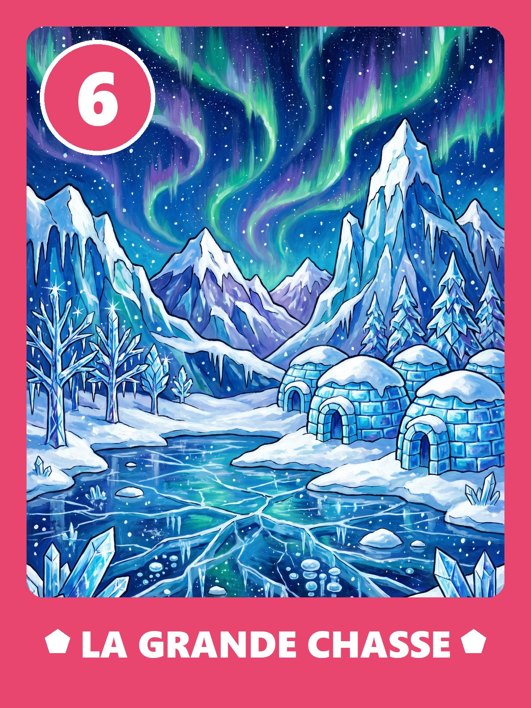

Posez la carte à plat, tenez le téléphone au-dessus.

Cette nuit, un petit extraterrestre s’est écrasé chez vous. Ses six morceaux de vaisseau sont cachés dans la maison. À vos enfants de l’aider à rentrer.

Rien n’est envoyé ni enregistré : l’image de la caméra reste sur le téléphone.
Étape 1





Étape 2
Étape 3
Gardez la carte 1 dans votre poche. Cachez les autres, puis dites où.
Étape 4
Autorisez la caméra pour ce site (l’icône à gauche de l’adresse), puis réessayez. Ou jouez dans le salon virtuel.